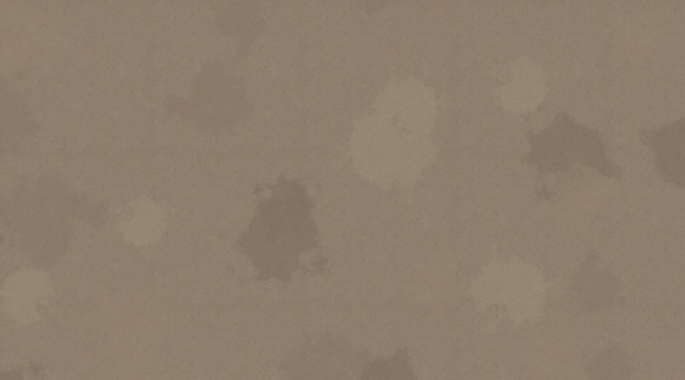
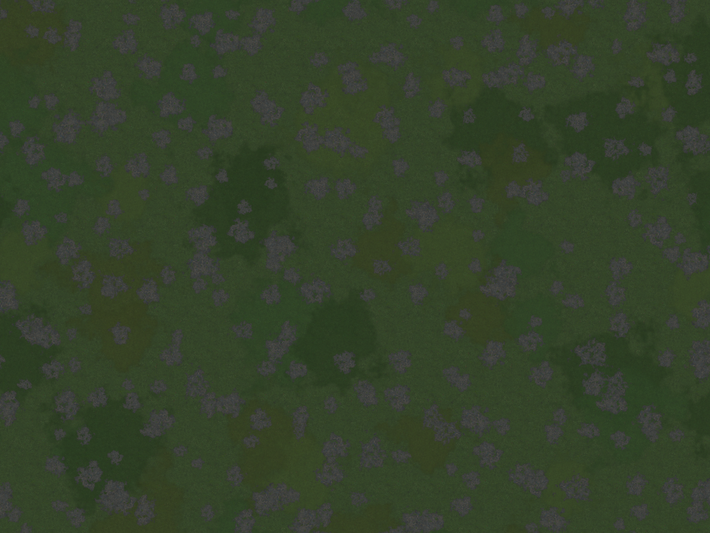

在线预览：64px / 格
下载完整 128px 素材包
下载完整 64px 素材包
全部大文件
性能测试
土地和草地专题
可平铺的地面底图与透明叠加素材。选择一种地面，查看交互预览和素材包。
返回素材库
土地
可平铺底图与 4 张透明土色变化 · 64 / 128 像素/格

下载 128 像素/格
·
下载 64 像素/格
草地
可平铺底图、4 张草斑与 8 张碎石 · 原始 64 像素/格

下载 64 像素/格